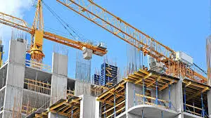

🏗️ Construction Solutions
We offer full-scale construction services including residential, commercial, and industrial projects. Our team ensures structural integrity, modern design, and timely delivery.
We offer full-scale construction services including residential, commercial, and industrial projects. Our team ensures structural integrity, modern design, and timely delivery.
From concept to completion, we transform spaces with elegant finishes, custom furniture, and innovative layouts tailored to client needs.
We integrate eco-friendly materials and energy-efficient systems to promote green architecture and reduce environmental impact.
We source high-quality materials and manage logistics to ensure smooth project execution across Zimbabwe and neighboring regions.
Our experts provide strategic guidance, feasibility studies, and cost-effective planning for construction and design ventures.